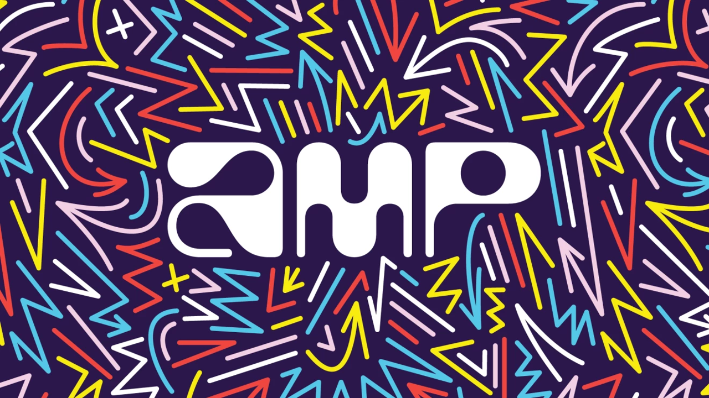

Amazon Literary Partnership está aceptando solicitudes de subvenciones de 2022 de organizaciones literarias sin fines de lucro, desde ahora hasta el 15 de abril. Los beneficiarios de las subvenciones se anunciarán en junio. Obtén más información y aplica ahora.
Amazon Literary Partnership busca financiar organizaciones que trabajan para defender a autores y narradores diversos, marginados y subrepresentados. Nuestros anteriores beneficiarios de subvenciones representan instituciones locales y nacionales de todos los tamaños. Incluyen centros de escritura sin fines de lucro, residencias, becas, clases extracurriculares, revistas literarias, organizaciones nacionales que apoyan la narración de cuentos y la libertad de expresión, y editoriales de ficción, no ficción y poesía de renombre internacional. Obtenga más información sobre nuestros beneficiarios de subvenciones 2021 .
Amp se lanzará en versión beta estadounidense de acceso limitado para iOS. Descubra cómo permitirá a los creadores pinchar sus propios programas de forma gratuita, con decenas de millones de canciones con licencia.
Amazon acaba de lanzar la versión beta de acceso limitado de Amp , una nueva aplicación que te permitirá pinchar tus propios programas de radio en vivo. Los creadores pueden usar un catálogo de decenas de millones de canciones con licencia de Universal Music Group, Sony Music Entertainment, Warner Music Group y una larga lista de compañías de música independientes, como Beggars Group, Believe, CD Baby y PIAS, entre otras. añadido todos los días. Los creadores también pueden interactuar con su comunidad en tiempo real, sin necesidad de suscripción, hardware adicional o edición.
La nueva experiencia de juego de rol basada en juegos 'AWS Cloud Quest: Cloud Practitioner' y un programa AWS Educate mejorado ofrecen oportunidades de aprendizaje práctico y gratuito para las personas que buscan habilidades informáticas en la nube.
Amazon Web Services (AWS) anuncia dos nuevas iniciativas de capacitación gratuitas que facilitan que las personas obtengan capacitación práctica en habilidades de computación en la nube de una manera divertida y atractiva. La primera iniciativa es una nueva experiencia de juego de rol basada en juegos, llamada AWS Cloud Quest: Cloud Practitioner , ideal para los primeros años de carrera o para los estudiantes adultos nuevos en la nube. AWS Cloud Quest enseña conceptos básicos de computación en la nube mientras los estudiantes golpean drones y recolectan gemas en su búsqueda para resolver desafíos en una ciudad virtual. AWS también lanzó una nueva versión mejorada de AWS Educate, con contenido interactivo agregado y la eliminación del requisito de dirección de correo electrónico .edu, lo que hace que el programa sea aún más accesible. Con AWS Educate, los estudiantes de hasta 13 años pueden acceder a cientos de horas de capacitación, recursos y laboratorios gratuitos y a su propio ritmo diseñados específicamente para estudiantes nuevos en la nube.
Amazon Housing Equity Fund ha comprometido más de $1200 millones para crear y preservar más de 8000 hogares, ayudando a unas 18 000 personas.
Amazon proporcionará más de $124,4 millones para construir 1060 viviendas asequibles cerca de cuatro sitios de transporte público mientras trabaja en asociación con la Autoridad de Tránsito del Área Metropolitana de Washington (Metro) y Sound Transit, el sistema de tránsito que sirve a la región de Central Puget Sound del estado de Washington, para completar el urbanizaciones. Esto es parte del compromiso de tránsito de $ 300 millones de Amazon a partir de 2021 para crear 3,000 nuevas viviendas asequibles en colaboración con las agencias de tránsito en cada región.
Amazon Web Services está lanzando dos programas AWS Global Accelerator para ayudar a las nuevas empresas a abordar algunos de los desafíos más apremiantes del mundo mientras construyen negocios exitosos basados en la nube.
Amazon Web Services (AWS) está aceptando solicitudes de nuevas
empresas para dos programas aceleradores. Diez startups serán
seleccionadas para participar en cada uno de los siguientes
programas:
*AWS Space Accelerator ayuda a las empresas emergentes que utilizan la
nube a reinventar las misiones espaciales comerciales y
gubernamentales.
*AWS Sustainable Cities Accelerator apoya a las empresas emergentes
que crean soluciones de movilidad y transporte para aumentar la
sostenibilidad de los centros urbanos de rápido crecimiento